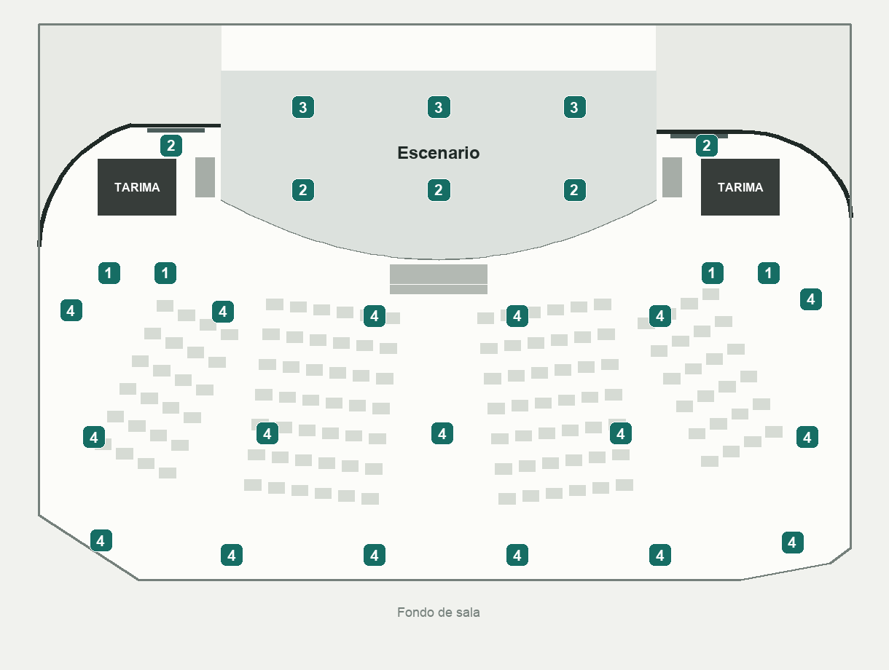
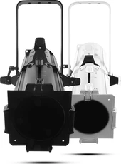
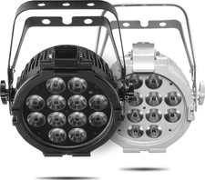
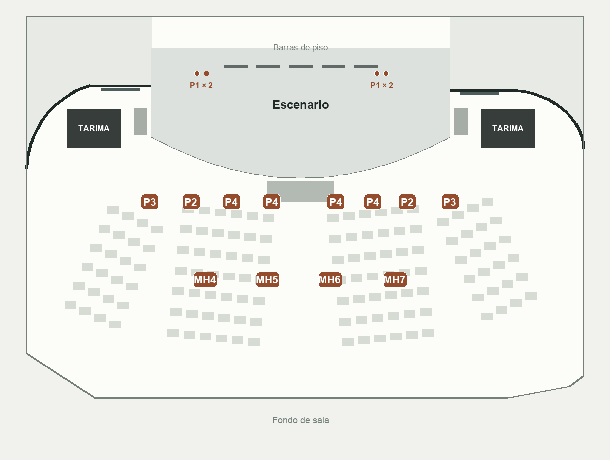
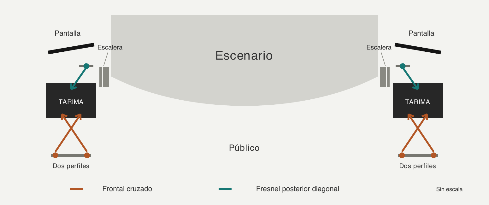

Estudio de iluminación
Auditorio
Dos tarimas simétricas junto a las escaleras del escenario, frente a las pantallas laterales.
Comparar montaje

Perspectiva
Escena
Ver el P2 izquierdo en Lightkey
![Vista de Lightkey con el segundo foco desde la izquierda seleccionado. El menú muestra American DJ COB Cannon Wash DW [1].](recursos/lateral-p2-lightkey.webp)
Ver comparación lado a lado
Ajustar luminarias
Geometría lateral según la planta baja. Tarimas y luminarias a escala de referencia. Plano de puntos de montaje
Plano de iluminación



1 Perfiles de recorte 4 uds.
Dos por tarima. El cruce ilumina las caras y las cuchillas delimitan el haz frente a las pantallas.
Chauvet DJ EVE E-50Z · Ver punto en 3D
2 Fresnel 5 uds.
Dos contraluces diagonales dibujan hombros y brazos en danza. Tres superiores iluminan banda y voces.
Chauvet DJ EVE F-50Z · Danza · Escenario
3 PAR de contraluz 3 uds.
Uno por tercio de la barra posterior. El contorno de luz separa a los músicos del banner.
Chauvet DJ SlimPAR Pro H USB · Ver punto en 3D
4 Colgantes de sala 17 uds.
Tres filas de 6, 5 y 6. Blanco regulable para lectura y color ambiental para las celebraciones.
Elation FUZE Pendant Compact · Ver punto en 3D


- P1 4 uds.
- PAR de piso
Dos a cada lado del escenario, dirigidos al banner.
Chauvet DJ SlimPAR Q12BT · Ver punto - P2 2 uds.
- Frontal blanco
Segundo equipo desde cada extremo del truss frontal.
ADJ COB Cannon Wash DW · Ver punto - P3 2 uds.
- Fresnel de los extremos
Luz frontal de borde suave sobre el escenario.
Chauvet DJ EVE F-50Z · Ver punto - P4 4 uds.
- PAR del tramo central
U’King LED PAR Light 7 4in1. Refuerzo frontal en cuatro posiciones.
Ver punto - MH4–MH7 4 uds.
- Cabezas móviles
Segunda barra sobre el público. Perfil de control Generic Spot Beam ST para acentos de danza y muros.
Ver punto - Barras LED
- Baño del banner
Luz ascendente desde el piso. Cantidad por verificar en sala.
Ver punto
Tarimas, escaleras y muros laterales





Luz de sala
Cobertura en butacas
El objetivo es alcanzar 150 lux en cada butaca y en los pasillos del público. Compara las distribuciones y cambia la altura para ver dónde llega esa luz.
Distribución de colgantes
Debajo del entrepiso. El mapa supone un trayecto libre entre cada colgante y las butacas. Al fondo, el entrepiso intercepta la luz del techo y hay empotrados propios. Para conocer la cobertura real de esa zona faltan la profundidad del voladizo, la altura libre y mediciones de lux. Fotografía del entrepiso

Cómo se calcula
Se suma la luz directa de cada FUZE Pendant Compact en blanco a 3.200 K y al 100 %, con su lente de 45° y un factor de mantenimiento de 0,80. La retícula de 5 cm incluye las filas y los pasillos del croquis. Las escenas de color del visor son ilustrativas.
Con esta altura, un colgante tiene una huella de de diámetro y m² al 50 % de intensidad. El mapa incluye la luz que se superpone entre equipos.
La escala del croquis y la altura del recinto son supuestas. Las medidas del salón, las obstrucciones y las lecturas con luxómetro permitirán confirmar la cobertura. Ver cálculo en el informe técnico
Documentación
Informes
Montaje, tipos de luz, diagramas y cobertura de sala.
Referencia histórica para seis colgantes y el montaje anterior de danza. Los dos soportes posteriores requieren cotización.
Planta actualizada, cantidades y criterio de uso en una página.